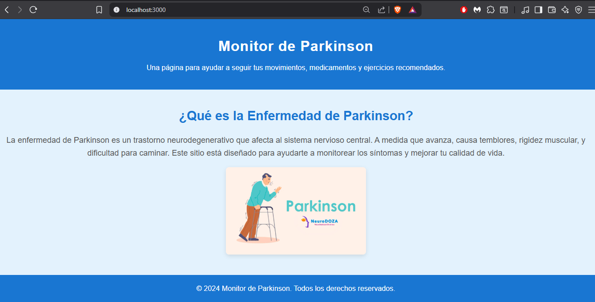
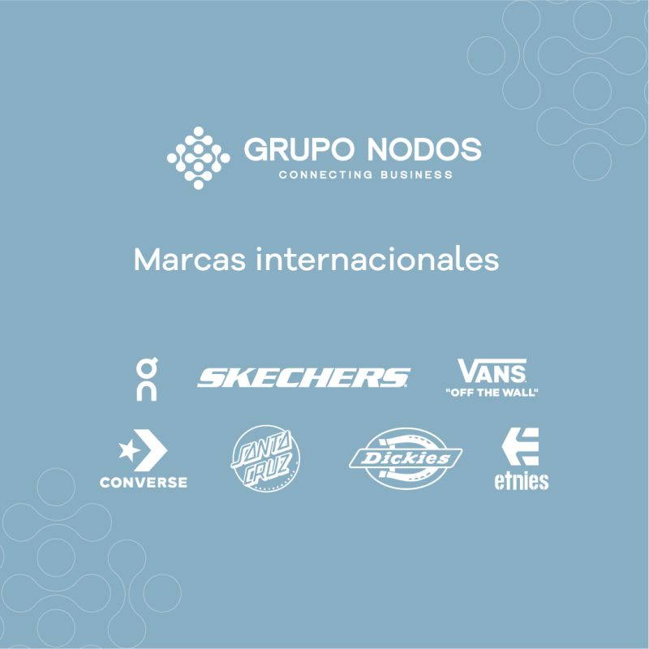
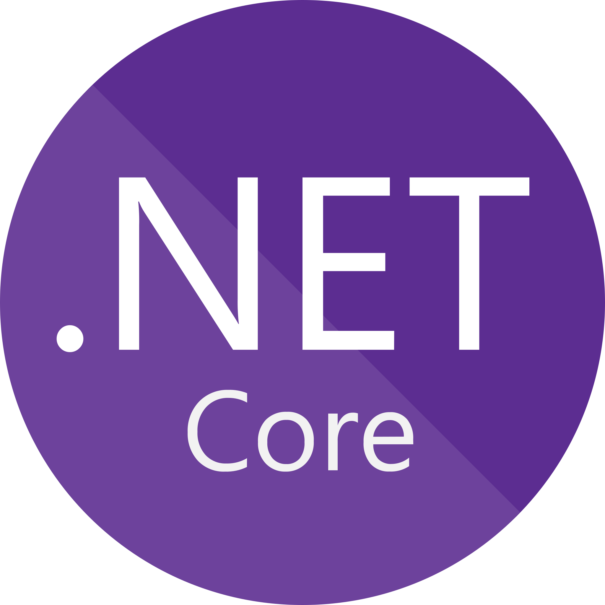

Experiencia 01
Freelancer - Desarrollo y soporte tecnico
Apoyo independiente en creacion de paginas web, chatbots, APIs REST, mantenimiento basico de equipos y asistencia en configuracion de redes.
Ver referencia
Estudiante de Ingenieria en Ciencias de la Computacion con interes en soporte tecnico, redes, desarrollo web, APIs y soluciones digitales para empresas.
Informacion y Tecnologia
Soy estudiante de Ingenieria en Ciencias de la Computacion en la Universidad Politecnica Salesiana, cursando quinto semestre. Me enfoco en soporte IT, mantenimiento de equipos, redes basicas, desarrollo backend y creacion de herramientas web utiles, ordenadas y seguras.
Trabajos seleccionados en soporte, desarrollo y asistencia IT
Apoyo independiente en creacion de paginas web, chatbots, APIs REST, mantenimiento basico de equipos y asistencia en configuracion de redes.
Ver referencia
Practicas en el area de tecnologia brindando soporte a usuarios, revision de equipos, asistencia con incidencias y apoyo en tareas operativas del departamento IT.
Perfil ITApoyo como pasante IT en asistencia tecnica, documentacion de procesos, soporte a herramientas digitales y colaboracion en soluciones internas.
Contactos
Herramientas y conocimientos que fortalecen mi perfil IT





Contactos profesionales relacionados con mi experiencia
Referencia profesional por trabajos independientes de desarrollo, soporte y asistencia tecnica.
Referencia de practicas como pasante IT en soporte tecnico y apoyo operativo.
Referencia de practicas como pasante IT en asistencia tecnica y soluciones digitales.